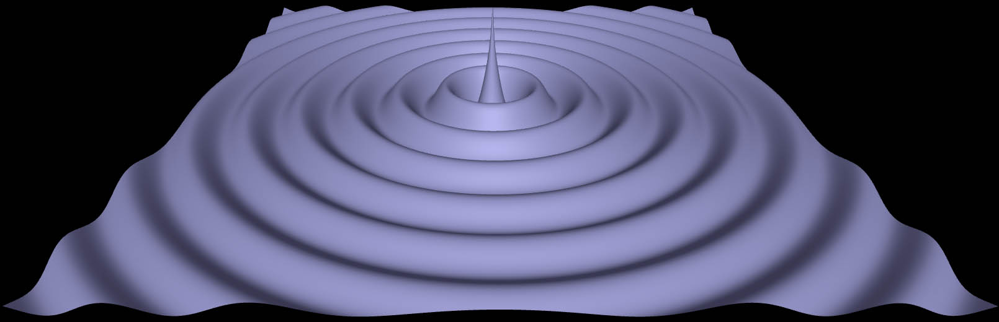

Definitions
λ = wavelength
A = amplitude
Phi0 = initial phase
Theta = line wave angle of propagation with respect to the positive x-axis
X = x-coordinate of point source
Y = y-coordinate of point source
d = distance between two point sources
Image 1: Line Wave Traveling in Positive X-Direction
A = 4, Lambda = 8, Phi0 = 0, Theta = 0.
To download the high resolution image, copy the following link into your
Image 2: Line Wave Traveling in Positive X-Direction, Increased Amplitude
A = 6, Lambda = 8, Phi0 = 0, Theta = 0.
To download the high resolution image, copy the following link into your
Image 3: Line Wave Traveling in Positive X-Direction, Increased λ
A = 6, Lambda = 16, Phi0 = 0, Theta = 0.
To download the high resolution image, copy the following link into your
Image 4: Line Wave, Theta = 45 Degrees
A = 6, Lambda = 8, Phi0 = 0, Theta = 45 degrees.
To download the high resolution image, copy the following link into your
Image 5: Superposition of Two Line Waves Traveling in Different Directions
A1 = 4, Lambda1 = 8, Phi01 = 0, Theta1 = 0 degrees.
A2 = 4, Lambda2 = 8, Phi02 = 0, Theta2 = 90 degrees.
To download the high resolution image, copy the following link into your
Image 6: Point Source at Origin
A = 8, Lambda = 12, Phi0 = 0, X = Y = 0.
To download the high resolution image, copy the following link into your

Image 7: Point Source at Origin, Decreased λ
A = 8, Lambda = 8, Phi0 = 0, X = Y = 0.
To download the high resolution image, copy the following link into your
Image 8: Interference of Waves from Two Point Sources, d = 3Lambda
A1 = 8, Lambda1 = 8, Phi01 = 0, X1 = -50, Y1 = 12.
A2 = 8, Lambda2 = 8, Phi02 = 0, X2 = -50, Y2 = -12.
To download the high resolution image, copy the following link into your
Image 9: Interference of Waves from Two Point Sources, d = 4*Lambda
A1 = 8, Lambda1 = 8, Phi01 = 0, X1 = -50, Y1 = 16.
A2 = 8, Lambda2 = 8, Phi02 = 0, X2 = -50, Y2 = -16.
To download the high resolution image, copy the following link into your